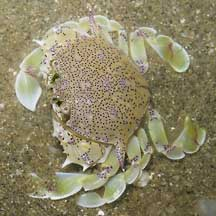
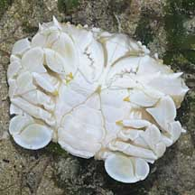
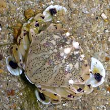

|
|
| crabs text index | photo index |
| Phylum Arthropoda > Subphylum Crustacea > Class Malacostraca > Order Decapoda > Brachyurans > Family Matutidae |
| Spotted
moon crab Ashtoret lunaris Family Matutidae updated Dec 2019 Where seen? This spotted moon crab is commonly encountered on our shores. Sandy silty shores, especially near seagrasses. It is more active at night and is rarely seen by daytime visitors as it is then often buried in the sediments. 'Lunaris' in Latin refers to the moon. Features: Body width 3-8cm. Body rather circular, with a pair of long spikes on the sides. There are six large smooth bumps in the middle of the body, the bumps are sometimes but not always highlighted by body patterns. Colours beige to yellow with little maroon dots evenly sprinkled on the body surface, sometimes highlighting the six bumps. Pincers short, sturdy, held against the body to form a somewhat box-like shape. All walking legs end in paddle-shaped tips and used to skim along the sea bottom and also like spades to rapidly burrow into the sand. Some may have large dark blotches on the paddles, with smaller dark spots on the legs. |
|
 Changi, Apr 05 |
 Underside. Changi, Apr 10 |
 Sisters Island, Oct 06 |
| Spotted moon crabs on Singapore shores |
On wildsingapore
flickr
|
| Other sightings on Singapore shores |
|
Acknowledgements
References
|